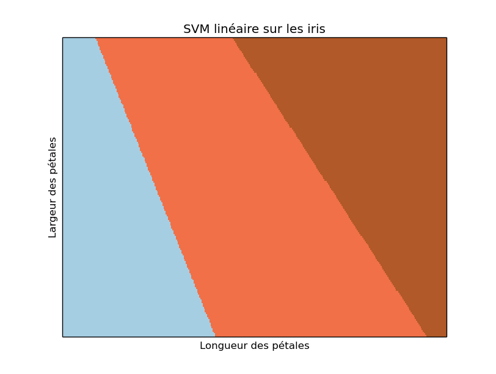

Nous allons maintenant étudier l'algorithme SVM de classification supervisée. Nous utilisons la la bibliothèque d'apprentissage automatique disponible dans python dénommée scikit-learn. Il est indispensable d'avoir réalisé le TP sur la régression logistique auparavant. Nous allons voir que passer de la régression logistique à une SVM se fait sans aucun effort !
À nouveau, nous allons utiliser les iris. Nous reprenons à l'identique ce que nous avons fait pour la régresion logistique pour charger les données.
On commence par importer la bilbiothèque nécessaire pour les SVM :
from sklearn import svm
puis on applique la SVM sur le jeu de données :
C = 1.0 svc = svm. SVC (kernel = 'linear', C = C). fit(X, Y)
On peut maintenant utiliser le modèle pour prédire la classe d'une donnée.
Pour cela, en supposant que donneesApredire est un tableau contenant les attributs des données à prédire (tableau de la même forme que X), on écrit :
classesPredites = svc. predict (donneesApredire)
qui met dans classesPredites la classe prédite pour chacune des données contenues dans donneesApredire.
Faire un graphique dans le plan (longueur des pétales, largeur des pétales) dans lequel vous identifiez (par la taille, une couleur, ... comme vous voulez du moment que l'on comprend) les données mal prédites par l'une ou l'autre méthode, ou les deux.
Le but du graphique que nous allons réaliser maintenant et de visualiser les zones de l'espace des données correspondant à la prédiction de chacune des classes.
Pour pouvoir réaliser un graphique en deux dimensions, nous ne considérons que 2 attributs des iris, la longueur et la largeur des pétales.
Le principe consiste à balayer cet espace à intervalles réguliers, à prédire la classe de chacun de ces points et à réaliser un graphique avec ces prédictions.
On balaie par exemple la longueur des pétales depuis la valeur minimale de cet attribut dans le jeu de données moins une marge (0,5 par exemple) jusque la valeur maximale de cet attribut dans le jeu de données plus une marge. On fait la même chose pour la largeur des pétales. Dans scikit-learn, on dispose de mécanismes qui nous permettent de faire cela très simplement. On construit une grille (mesh en anglais) dont les intersections sont ces points qui vont être balayés. Ainsi, on peut écrire :
import numpy as np h = .02 # pas de la grille X2d = iris.data [:, 2:4] # on ne prend que les deux attributs longueur et largeur des pétales # on crée la grille ci-après x_min = X2d [:, 0].min() - .5 x_max = X2d [:, 0].max() + .5 y_min = X2d [:, 1].min() - .5 y_max = X2d [:, 1].max() + .5 xx, yy = np.meshgrid (np.arange (x_min, x_max, h), np.arange (y_min, y_max, h)) # la grille est créée. Les coordonnées des intersections sont dans xx et yy # on construit la SVM sur tous les exemples svc2d = svm. SVC (kernel = 'linear', C = C). fit (X2d, Y) svc2d. fit (X2d, Y) # on utilise ce modèle pour prédire la classe de chacun des exemples Z2d = svc2d. predict (np.c_[xx.ravel(), yy.ravel()]) # et on fait la figure Z2d = Z2d. reshape (xx. shape) plt. figure () plt. pcolormesh (xx, yy, Z2d, cmap=plt.cm.Paired) plt. show ()
Ces quelques lignes de python tracent les frontières de décision. Cette figure ressemble à cela :

De nombreux algorithmes de classification supervisée (et non supervisée) sont disponibles dans scikit-learn. Une fois que vous savez en utilisez un, vous savez tous les utiliser. Il suffit d'importer les fonctions nécessaires et d'appeler ensuite la bonne fonction.
Vous avez ainsi accès à :